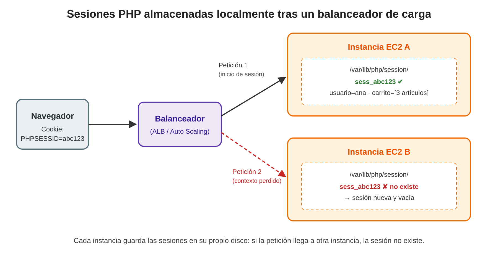
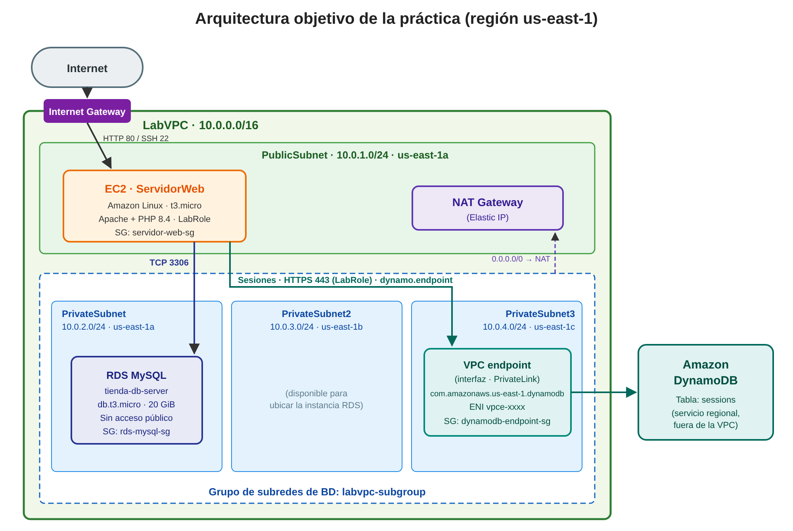
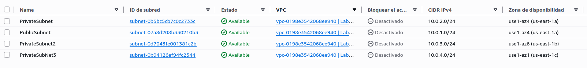
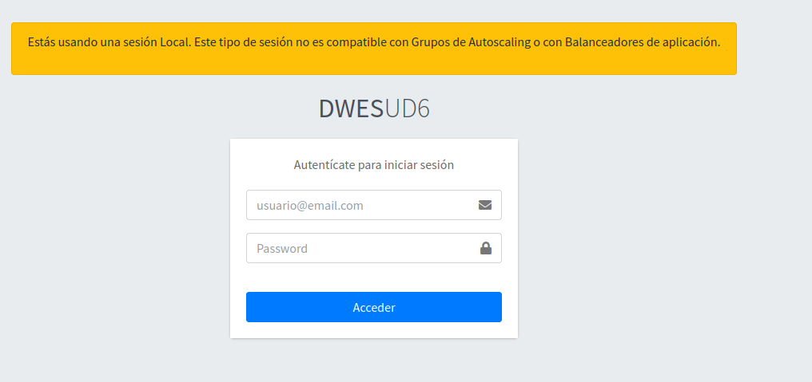
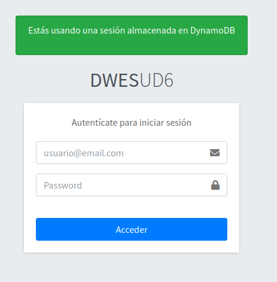

Práctica: Aplicación web PHP con Amazon RDS for MySQL y gestión de sesiones en Amazon DynamoDB¶
| Curso de especialización | Recursos y Servicios en la Nube |
| Módulo profesional | Administración de bases de datos y almacenamiento en la nube |
| Plataforma | AWS Academy Learner Lab (región us-east-1) |
| Servicios implicados | Amazon VPC, Amazon EC2, Amazon RDS for MySQL, Amazon DynamoDB, AWS IAM |
1. Introducción¶
En la presente práctica se desplegará una aplicación web desarrollada en PHP cuya capa de persistencia se distribuye entre dos servicios gestionados de AWS con propósitos claramente diferenciados:
- Amazon RDS for MySQL, que albergará la base de datos relacional de la aplicación (catálogo, usuarios, pedidos, etc.).
- Amazon DynamoDB, que actuará como almacén centralizado de las sesiones de usuario.
La aplicación se ejecutará sobre instancias Amazon EC2 concebidas para formar parte de un grupo de servidores web, de modo que la arquitectura resultante pueda escalar horizontalmente detrás de un balanceador de carga o de un grupo de Auto Scaling sin que los usuarios pierdan su contexto de navegación.
2. Planteamiento del problema: las sesiones locales en entornos escalables¶
2.1. Funcionamiento de las sesiones en PHP¶
El protocolo HTTP carece de estado: cada petición es independiente de las anteriores. Para mantener información asociada a un usuario a lo largo de su navegación (identidad autenticada, contenido del carrito de la compra, preferencias, mensajes flash, tokens CSRF, etc.), PHP emplea el mecanismo de sesiones:
- Al invocar
session_start(), PHP genera un identificador de sesión aleatorio y lo envía al navegador mediante una cookie (por defecto,PHPSESSID). - Los datos de la sesión (
$_SESSION) se almacenan en el servidor. Con la configuración por defecto (session.save_handler = files), se guardan como ficheros en el disco local de la máquina, en la ruta indicada porsession.save_path(por ejemplo,/var/lib/php/session/sess_<id>). - En cada petición posterior, el navegador reenvía la cookie y PHP recupera del disco local el fichero correspondiente a ese identificador.
Este diseño resulta completamente válido mientras la aplicación se ejecute en un único servidor.
2.2. El problema al escalar horizontalmente¶
Cuando la aplicación se despliega en varias instancias EC2 detrás de un Application Load Balancer (ALB) o dentro de un grupo de Auto Scaling, el balanceador reparte las peticiones entre las instancias disponibles sin garantizar, por defecto, que un mismo usuario sea atendido siempre por la misma máquina.
La consecuencia es la que se ilustra en la Figura 1:
- La petición 1 (por ejemplo, el inicio de sesión) llega a la instancia A, que crea el fichero
sess_abc123en su propio disco. - La petición 2 del mismo usuario es encaminada a la instancia B. El navegador envía correctamente la cookie
PHPSESSID=abc123, pero la instancia B no dispone de ese fichero: PHP crea una sesión nueva y vacía y el contexto del usuario se pierde (el usuario aparece como no autenticado, el carrito queda vacío, los formularios fallan por token CSRF inválido, etc.).

Figura 1. Pérdida del contexto de sesión cuando las sesiones se almacenan en el disco local de cada instancia.
El problema se agrava en un grupo de Auto Scaling, ya que las instancias son efímeras por naturaleza:
- En una operación de reducción de escala (scale-in) o al sustituir una instancia considerada no saludable, la instancia se termina y todas las sesiones almacenadas en su disco desaparecen con ella.
- Las instancias de nueva creación arrancan sin ninguna sesión previa.
2.3. Alternativas de solución¶
| Alternativa | Descripción | Limitaciones |
|---|---|---|
| Sesiones persistentes (sticky sessions) | El balanceador asocia cada cliente a una instancia concreta mediante una cookie de afinidad. | Reparto de carga desigual; las sesiones se siguen perdiendo si la instancia se termina; contradice el principio de servidores sin estado. |
| Sistema de ficheros compartido (Amazon EFS) | Todas las instancias montan el mismo directorio de sesiones. | Mayor latencia, problemas de bloqueo de ficheros y coste añadido. |
| Almacén de sesiones centralizado | Las sesiones se guardan en un servicio externo a las instancias (Amazon DynamoDB, Amazon ElastiCache, una base de datos relacional). | Requiere configurar un manejador de sesiones (session handler) en la aplicación. |
La solución adoptada en esta práctica es la tercera: externalizar las sesiones en Amazon DynamoDB. De este modo, las instancias EC2 pasan a ser sin estado (stateless) y cualquiera de ellas puede atender cualquier petición. DynamoDB resulta especialmente adecuado para esta tarea por los siguientes motivos:
- Es un servicio completamente gestionado y sin servidor, sin instancias que administrar ni dimensionar.
- Ofrece latencias de milisegundos de un solo dígito en accesos por clave, que es exactamente el patrón de una sesión (lectura y escritura por identificador).
- Permite definir un atributo TTL (Time To Live) para que las sesiones caducadas se eliminen automáticamente.
- El AWS SDK para PHP incorpora un manejador de sesiones para DynamoDB (
Aws\DynamoDb\SessionHandler) que sustituye de forma transparente al almacenamiento en ficheros, sin necesidad de modificar el uso de$_SESSIONen el código. - El acceso se autoriza mediante el rol de IAM asociado a la instancia (
LabRole), sin incrustar credenciales en la aplicación.
Por su parte, los datos de negocio, de naturaleza relacional, residirán en Amazon RDS for MySQL, alojado en subredes privadas y sin acceso público.
3. Objetivos¶
Al finalizar la práctica, el alumnado será capaz de:
- Justificar la necesidad de externalizar el estado de sesión en arquitecturas escalables horizontalmente.
- Ampliar una VPC con subredes privadas distribuidas en varias zonas de disponibilidad y configurar su enrutamiento a través de un NAT Gateway.
- Desplegar una instancia EC2 con un servidor web y una aplicación PHP mediante un script de datos de usuario (user data).
- Crear un grupo de subredes de base de datos y una instancia de Amazon RDS for MySQL en subredes privadas.
- Restringir el acceso a la base de datos mediante grupos de seguridad que referencian a otros grupos de seguridad.
- Configurar Amazon DynamoDB como almacén de sesiones de una aplicación PHP.
4. Arquitectura objetivo¶
La Figura 2 muestra la arquitectura que se construirá en los apartados siguientes.

Figura 2. Arquitectura objetivo de la práctica.
Elementos principales:
- LabVPC (
10.0.0.0/16) con una subred pública y tres subredes privadas repartidas en tres zonas de disponibilidad. - Instancia EC2
ServidorWeben la subred pública, con Apache y PHP 8.4, que ejecuta la aplicación. - Instancia RDS MySQL
tienda-db-serveren el grupo de subredes privadaslabvpc-subgroup, accesible únicamente desde los servidores web. - Tabla de DynamoDB
sessionspara las sesiones, servicio regional al que la instancia accede mediante el rolLabRole. - Punto de enlace de VPC de tipo interfaz (interface VPC endpoint, basado en AWS PrivateLink) para DynamoDB, ubicado en
PrivateSubnet3. A través de él, el tráfico entre los servidores web y DynamoDB viaja por la red privada de AWS sin atravesar Internet.
5. Requisitos previos¶
- Haber iniciado el laboratorio en AWS Academy Learner Lab (indicador en verde) y acceder a la consola de AWS.
- Trabajar en todo momento en la región Norte de Virginia (
us-east-1). - Disponer de los ficheros proporcionados por el profesorado:
inicializar-entorno.sh: creación de la VPC base.user-data-ec2.sh: script de aprovisionamiento de la instancia EC2.00-ud5.sql: volcado de la base de datostiendautilizada por la aplicación.- Descargar la clave privada del laboratorio (
labsuser.pem) desde AWS Details → Download PEM en la página del Learner Lab, necesaria para conectarse por SSH y transferir ficheros a la instancia EC2.
6. Desarrollo de la práctica¶
Revisa la sección 8. Evidencias a entregar ya que muchas de las evidencias se generan mientras se realiza la práctica.
Paso 1. Creación de la VPC base¶
El script inicializar-entorno.sh crea, mediante la AWS CLI, la infraestructura de red de partida:
| Recurso | Nombre / Valor |
|---|---|
| VPC | LabVPC – 10.0.0.0/16 (resolución y nombres DNS habilitados) |
| Subred pública | PublicSubnet – 10.0.1.0/24 (asignación automática de IP pública) |
| Subred privada | PrivateSubnet – 10.0.2.0/24 |
| Internet Gateway | Asociado a LabVPC |
| Tabla de rutas pública | 0.0.0.0/0 → Internet Gateway, asociada a PublicSubnet |
| Elastic IP y NAT Gateway | NAT Gateway ubicado en PublicSubnet |
| Tabla de rutas privada | 0.0.0.0/0 → NAT Gateway, asociada a PrivateSubnet |
Ambas subredes se crean en la primera zona de disponibilidad de la región (us-east-1a).
Procedimiento:
-
Abra AWS CloudShell desde la barra superior de la consola de AWS.
-
Suba el fichero mediante Acciones → Cargar archivo y seleccione
inicializar-entorno.sh. -
Conceda permisos de ejecución y ejecute el script:
- Espere a que finalice. La creación del NAT Gateway puede prolongarse varios minutos. Al terminar, el script muestra un resumen con los identificadores de los recursos creados:
==========================================
VPC : vpc-xxxxxxxxxxxxxxxxx
IGW : igw-xxxxxxxxxxxxxxxxx
Public Subnet : subnet-xxxxxxxxxxxxxxxxx
Private Subnet : subnet-xxxxxxxxxxxxxxxxx
Public RT : rtb-xxxxxxxxxxxxxxxxx
Private RT : rtb-xxxxxxxxxxxxxxxxx
Elastic IP : eipalloc-xxxxxxxxxxxxxxxxx
NAT Gateway : nat-xxxxxxxxxxxxxxxxx
==========================================
- Anote estos identificadores, en particular el de la tabla de rutas privada (
Private RT), que se utilizará en el Paso 4. Esta salida es parte del contenido que se debe entregar al realizar la práctica.
Nota: el NAT Gateway genera coste por hora de funcionamiento. Recuerde detener el laboratorio al finalizar cada sesión de trabajo.
Paso 2. Grupo de seguridad de los servidores web¶
Desde EC2 → Red y seguridad → Grupos de seguridad → Crear grupo de seguridad, cree un grupo con la siguiente configuración:
| Parámetro | Valor |
|---|---|
| Nombre del grupo de seguridad | servidor-web-sg |
| Descripción | Acceso a los servidores web |
| VPC | LabVPC |
Reglas de entrada:
| Tipo | Protocolo | Puerto | Origen | Descripción |
|---|---|---|---|---|
| SSH | TCP | 22 | 0.0.0.0/0 (Anywhere-IPv4) |
Administración remota |
Las reglas de salida se mantienen con su valor por defecto (todo el tráfico permitido).
Nota: para comprobar el funcionamiento de la aplicación desde un navegador será necesario permitir también el tráfico HTTP (TCP 80). Esta regla se añadirá en el Paso 9.
Paso 3. Lanzamiento de la instancia EC2 ServidorWeb¶
Desde EC2 → Instancias → Lanzar instancias, configure la instancia como se indica:
| Parámetro | Valor |
|---|---|
| Nombre | ServidorWeb |
| AMI | Amazon Linux 2023 (valor por defecto de Amazon Linux) |
| Tipo de instancia | t3.micro |
| Par de claves | vockey |
| VPC | LabVPC |
| Subred | PublicSubnet |
| Asignar automáticamente la IP pública | Habilitar |
| Grupo de seguridad | Seleccionar existente: servidor-web-sg |
| Almacenamiento | 8 GiB, gp3 |
| Perfil de instancia de IAM (Detalles avanzados) | LabInstanceProfile (contiene el rol LabRole) |
| Datos de usuario (Detalles avanzados) | Contenido íntegro de [user-data-ec2.sh](files/user-data-ec2.sh) |
Nota: en AWS Academy, el rol
LabRolese asigna a las instancias EC2 a través del perfil de instanciaLabInstanceProfile, que es el nombre que aparece en el desplegable de la consola.
El script de datos de usuario se ejecuta una única vez, durante el primer arranque de la instancia, y realiza las siguientes tareas:
- Actualiza el sistema operativo.
- Instala Apache (
httpd), Git y PHP 8.4 con las extensiones necesarias (entre ellas,php8.4-mysqlndpara la conexión con MySQL). - Clona el repositorio de la aplicación en
/var/www/app. - Instala las dependencias de la aplicación con Composer (entre ellas, el AWS SDK para PHP, necesario para el manejador de sesiones de DynamoDB).
- Crea un VirtualHost de Apache cuyo
DocumentRootes/var/www/app/www/public. - Habilita e inicia los servicios
php-fpmyhttpd.
Verificación:
-
Espere a que la instancia supere las comprobaciones de estado (2/2).
-
Conéctese por SSH (o mediante EC2 Instance Connect) y revise el registro de ejecución del script:
- Compruebe que los servicios están activos y que la aplicación se ha descargado:
Paso 4. Ampliación de LabVPC con subredes privadas adicionales¶
Amazon RDS exige que un grupo de subredes de base de datos incluya subredes de, al menos, dos zonas de disponibilidad. Por ello, LabVPC debe ampliarse hasta quedar formada por una subred pública y tres subredes privadas, con la configuración exacta que se muestra a continuación:

Figura 3. Configuración final de subredes de LabVPC.
Atención: en la captura, la tercera subred privada figura como
PrivateSubNet3. El nombre que debe utilizarse esPrivateSubnet3, con la n en minúscula, tal como se indica en la tabla siguiente.
| Nombre | CIDR IPv4 | Zona de disponibilidad | Tipo | Estado inicial |
|---|---|---|---|---|
PublicSubnet |
10.0.1.0/24 |
us-east-1a |
Pública | Creada en el Paso 1 |
PrivateSubnet |
10.0.2.0/24 |
us-east-1a |
Privada | Creada en el Paso 1 |
PrivateSubnet2 |
10.0.3.0/24 |
us-east-1b |
Privada | A crear |
PrivateSubnet3 |
10.0.4.0/24 |
us-east-1c |
Privada | A crear |
4.1. Creación de las subredes
- Acceda a VPC → Subredes → Crear subred.
- Seleccione la VPC
LabVPC. - Añada las dos subredes con los valores de la tabla anterior (puede usar el botón Agregar nueva subred para crearlas en una única operación):
PrivateSubnet2: zonaus-east-1b, bloque10.0.3.0/24.PrivateSubnet3: zonaus-east-1c, bloque10.0.4.0/24.- Pulse Crear subred.
Importante: respete exactamente los nombres de las subredes (incluidas mayúsculas y minúsculas), sus bloques CIDR y sus zonas de disponibilidad.
4.2. Enrutamiento de las nuevas subredes a través del NAT Gateway
Una subred recién creada queda asociada implícitamente a la tabla de rutas principal de la VPC, que solo contiene la ruta local. Para que las nuevas subredes privadas dispongan de salida a Internet a través del NAT Gateway, deben asociarse a la tabla de rutas privada creada en el Paso 1:
- Acceda a VPC → Tablas de enrutamiento y seleccione la tabla de rutas privada (identificador
Private RTdel Paso 1). Verifique en la pestaña Rutas que contiene la entrada:
| Destino | Destino (target) |
|---|---|
10.0.0.0/16 |
local |
0.0.0.0/0 |
nat-xxxxxxxxxxxxxxxxx |
-
En la pestaña Asociaciones de subred explícitas, pulse Editar asociaciones de subred.
-
Marque
PrivateSubnet,PrivateSubnet2yPrivateSubnet3y guarde los cambios.
Verificación: en VPC → Subredes, seleccione cada subred privada y compruebe, en la pestaña Tabla de enrutamiento, que dispone de la ruta 0.0.0.0/0 → nat-….
Paso 5. Creación del grupo de subredes de base de datos¶
Un grupo de subredes de base de datos (DB subnet group) es el conjunto de subredes de una VPC en las que Amazon RDS puede ubicar las instancias de base de datos.
Desde Aurora and RDS → Grupos de subredes → Crear grupo de subredes de base de datos:
| Parámetro | Valor |
|---|---|
| Nombre | labvpc-subgroup |
| Descripción | Subredes privadas de LabVPC para RDS |
| VPC | LabVPC |
| Zonas de disponibilidad | us-east-1a, us-east-1b, us-east-1c |
| Subredes | 10.0.2.0/24 (PrivateSubnet), 10.0.3.0/24 (PrivateSubnet2), 10.0.4.0/24 (PrivateSubnet3) |
Importante: seleccione exclusivamente las tres subredes privadas. La subred pública
10.0.1.0/24, que también pertenece aus-east-1a, no debe formar parte del grupo ya que, para securizar la base de datos, queremos que ésta no sea accesible desde internet.
Paso 6. Grupo de seguridad de la base de datos¶
La base de datos solo debe aceptar conexiones procedentes de los servidores web. En lugar de autorizar direcciones IP concretas, se autorizará al grupo de seguridad de los servidores web, de forma que cualquier instancia que pertenezca a servidor-web-sg (incluidas las que se creen en el futuro dentro de un grupo de Auto Scaling) pueda conectarse.
Desde EC2 → Grupos de seguridad → Crear grupo de seguridad:
| Parámetro | Valor |
|---|---|
| Nombre del grupo de seguridad | rds-mysql-sg |
| Descripción | Acceso MySQL desde los servidores web |
| VPC | LabVPC |
Reglas de entrada:
| Tipo | Protocolo | Puerto | Origen | Descripción |
|---|---|---|---|---|
| MySQL/Aurora | TCP | 3306 | Grupo de seguridad servidor-web-sg |
MySQL desde servidores web |
Paso 7. Creación de la instancia de Amazon RDS for MySQL¶
Desde Aurora and RDS → Bases de datos → Crear base de datos, seleccione el método Creación estándar y configure los siguientes parámetros:
Opciones del motor y plantilla
| Parámetro | Valor |
|---|---|
| Tipo de motor | MySQL |
| Edición | MySQL Community |
| Versión del motor | Versión por defecto |
| Plantilla | Desarrollo y pruebas |
| Opciones de implementación | Implementación de instancia de base de datos de zona de disponibilidad única (1 instancia) |
Configuración
| Parámetro | Valor |
|---|---|
| Identificador de la instancia de base de datos | tienda-db-server |
| Nombre de usuario maestro | admin |
| Administración de credenciales | Autoadministrado |
| Usuario maestro | admin |
| Contraseña maestra | abdanPass |
Configuración de la instancia y almacenamiento
| Parámetro | Valor |
|---|---|
| Clase de instancia | Clases ampliables → db.t3.micro |
| Tipo de almacenamiento | SSD de uso general (gp), valor por defecto |
| Almacenamiento asignado | 20 GiB |
Conectividad
| Parámetro | Valor |
|---|---|
| Recurso de computación | No conectarse a un recurso informático EC2 |
| Nube privada virtual (VPC) | LabVPC |
| Grupo de subredes de base de datos | labvpc-subgroup |
| Acceso público | No |
| Grupo de seguridad de VPC | Elegir existente: rds-mysql-sg (eliminar el grupo default) |
| Zona de disponibilidad | Sin preferencia |
| Puerto de la base de datos | 3306 |
Supervisión (configuración orientada a minimizar el coste)
| Parámetro | Valor |
|---|---|
| Database Insights | Estándar |
| Período de retención de Performance Insights | 7 días |
| Monitorización mejorada (Enhanced Monitoring) | Deshabilitada |
Revise el resumen de costes estimados y pulse Crear base de datos. La creación de la instancia puede tardar entre 10 y 15 minutos.
Verificación:
-
Espere a que el estado de
tienda-db-serversea Disponible. -
En la pestaña Conectividad y seguridad, anote el punto de enlace (endpoint) de la instancia, con el formato
tienda-db-server.xxxxxxxxxxxx.us-east-1.rds.amazonaws.com. Compruebe que Accesible públicamente figura comoNoy que el grupo de seguridad asociado esrds-mysql-sg. -
Descarga el fichero
bundle.pem
- Desde la instancia
ServidorWeb, compruebe la conectividad con la base de datos. Ejecuta estos comandos desde la carpeta en la que te descargaste el ficheorbundle.pem:
sudo dnf install -y mariadb105
mysql -h <endpoint-rds> -u admin -p --ssl --ssl-ca=./global-bundle.pem --ssl-verify-server-cert
Introduzca la contraseña abdanPass y ejecute SELECT VERSION(); para confirmar la conexión.
Si te fijas, el comando de conexión varía respecto al que te propone AWS cuando entras en tienda-db-server > Conectividad y seguridad > MySQL (Linux). Esto es porque el cliente que usamos en la AMI EC2 instala MariaDB, y no es compatible con los argumentos --ssl-mode=VERIFY_IDENTITY
Paso 8. Importación de la base de datos tienda en Amazon RDS¶
La instancia RDS se encuentra en subredes privadas y no es accesible públicamente, por lo que la importación debe realizarse desde la instancia ServidorWeb, que sí tiene permitido el acceso al puerto 3306. AWS CloudShell no puede utilizarse para este fin, ya que se ejecuta fuera de LabVPC.
8.1. Acceder a la carpeta donde se encuentra el volcado de base de la base de datos
Accede a la consola de la máquina EC2. Mi recomendación es que te conectes desde el terminal de tu equipo ya que es posible que necesites tener varias conexiones abiertas, una para configurar y otra para ver el log de errores de apache.
Una vez conectada, copia el fichero de volcado
8.2. Importación del volcado
Conéctese por SSH a ServidorWeb y ejecute:
mysql -h <endpoint-rds> -u admin -p --ssl --ssl-ca=./global-bundle.pem --ssl-verify-server-cert < ~/00-tienda.sql
El script elimina, si existe, y crea el esquema tienda, junto con sus tablas, datos y restricciones de integridad referencial.
Verificación:
Una vez conectado ejecuta los siguientes comandos sql:
Deben aparecer, entre otras, las tablas categoria, producto, proveedor, trabajadores, rol y usuario_sistema. La última sentencia debería mostrar los usuarios de la aplicación, todos ellos con la contraseña TestTest1. Anota el email del usuario con id_user = 1.
8.3. Creación de un usuario de base de datos para la aplicación
Por el principio de mínimo privilegio, la aplicación no debe conectarse con el usuario maestro admin, que tiene control total sobre la instancia RDS. Se creará un usuario específico con privilegios exclusivamente sobre el esquema tienda.
Ejecute las siguientes sentencias:
CREATE USER 'tienda_user'@'%' IDENTIFIED BY 'TiendaPass1';
GRANT SELECT, INSERT, UPDATE, DELETE ON tienda.* TO 'tienda_user'@'%';
FLUSH PRIVILEGES;
Verificación:
mysql -h <endpoint-rds> -u tienda_user -p --ssl --ssl-ca=./global-bundle.pem --ssl-verify-server-cert -e "SHOW GRANTS; USE tienda; SELECT COUNT(*) FROM producto;"
El usuario debe poder consultar las tablas de tienda, pero no debe tener acceso a ningún otro esquema.
Nota: el origen
'%'permite la conexión desde cualquier equipo, pero la restricción efectiva la impone el grupo de seguridadrds-mysql-sg, que solo admite tráfico procedente de los servidores web.
🛠️ Recomendación: supervisión de los errores de PHP durante la práctica¶
Aunque no es obligatorio, se recomienda mantener abierta en una pestaña independiente del terminal una conexión SSH a la instancia
ServidorWebque muestre en tiempo real los errores generados por PHP. Esto permite identificar con rapidez si un fallo de la aplicación se debe a la conexión con la base de datos o a algún error en el acceso a DynamoDB:
Puede utilizarse la inteligencia artificial o cualquier otro recurso habitual de trabajo para, a partir de los mensajes de error obtenidos, ir subsanando las incidencias que se presenten.
Para realizar la práctica no es necesario modificar ningún código de la aplicación. Únicamente debe editarse el fichero de variables de entorno
.env, ubicado en/var/www/app/www/.env.✏️ Edición de las variables de entorno de la aplicación¶
Toda la configuración de la aplicación se realiza con el siguiente comando:
En
nano, guarde los cambios conCtrl + O(confirmando conIntro) y salga conCtrl + X.
Paso 9. Conexión de la aplicación con Amazon RDS (sesiones locales)¶
En este paso la aplicación se conectará a la base de datos, pero continuará almacenando las sesiones en el disco local de la instancia.
9.1. Apertura del puerto HTTP
Edite las reglas de entrada del grupo de seguridad servidor-web-sg y añada la siguiente regla:
| Tipo | Protocolo | Puerto | Origen | Descripción |
|---|---|---|---|---|
| HTTP | TCP | 80 | 0.0.0.0/0 (Anywhere-IPv4) |
Acceso web a la aplicación |
9.2. Configuración de la conexión a la base de datos
-
Abra en otra pestaña del terminal la supervisión de errores descrita en la recomendación anterior.
-
Descargue el fichero global-bundle.pem en la carpeta
/var/www/app/www/
sudo curl -o /var/www/app/www/global-bundle.pem https://truststore.pki.rds.amazonaws.com/global/global-bundle.pem
- Edite el fichero de variables de entorno:
- Complete el bloque
CONFIGURACION DE MYSQLcon los datos de la instancia RDS y del usuario creado en el Paso 8.3:
# CONFIGURACION DE MYSQL
# Punto de enlace de la base de datos MySQL
db.host=""
# Nombre de la base de datos a la que nos conectamos
db.schema=""
# Usuario que hemos creado con los privilegios para conectarse sólo a la base de datos tienda
db.user=""
# Password de ese usuario
db.pass=""
db.charset='utf8mb4'
db.ssl_pem="/var/www/app/www/global-bundle.pem"
db.emulated='1'
Sustituya db.host por el punto de enlace real anotado en el Paso 7. El resto de variables del bloque (db.charset, db.ssl_pem, db.emulated) no deben modificarse.
Nota: la variable
db.ssl_pemapunta al paquete de certificados raíz de Amazon RDS (global-bundle.pem), incluido en el repositorio de la aplicación. Gracias a él, la conexión entre la aplicación y la base de datos viaja cifrada mediante TLS y el certificado del servidor RDS se valida. Puede comprobar su presencia conls -l /var/www/app/www/global-bundle.pem.
- Mantenga, de momento, el bloque
CONFIGURACION DE SESIONEScon su valor por defecto:
Verificación:
- Acceda desde el navegador a
http://<IP-publica-ServidorWeb>. Debe mostrarse la pantalla de inicio de sesión con un aviso en color amarillo que indica que se está utilizando una sesión local, no compatible con grupos de Auto Scaling ni con balanceadores de carga de aplicación (Figura 4).

Figura 4. Aplicación utilizando sesiones almacenadas localmente.
-
Inicie sesión con el usuario
admin@test.orgy la contraseñaTestTest1. Si el acceso es correcto, la conexión con Amazon RDS está funcionando. En caso contrario, revise en la pestaña de supervisión los errores dewww-error.log(errores típicos: punto de enlace incorrecto, credenciales erróneas o regla de entrada ausente enrds-mysql-sg, que se manifiesta como un tiempo de espera agotado). -
Compruebe, desde la sesión SSH, que la sesión se ha guardado como fichero en el disco local de la instancia:
Este fichero, sess_<identificador>, es precisamente el que se perdería si la siguiente petición del usuario fuese atendida por otra instancia.
Paso 10. Creación de la tabla de sesiones y del punto de enlace de VPC para DynamoDB¶
El manejador de sesiones de DynamoDB del AWS SDK para PHP (Aws\DynamoDb\SessionHandler) almacena cada sesión como un elemento de una tabla cuya clave de partición es el identificador de la sesión. El nombre de la tabla no es configurable desde el fichero .env, por lo que deberá crearse exactamente con el nombre indicado.
Desde DynamoDB → Tablas → Crear tabla:
| Parámetro | Valor |
|---|---|
| Nombre de la tabla | sessions |
| Clave de partición | id (tipo Cadena / String) |
| Clave de ordenación | Ninguna |
| Configuración de la tabla | Personalizar configuración |
| Clase de tabla | DynamoDB Standard |
| Modo de capacidad | Bajo demanda (On-demand) |
Mantenga el resto de parámetros con sus valores por defecto y pulse Crear tabla.
Nota: el modo de capacidad bajo demanda solo factura las lecturas y escrituras efectivamente realizadas, lo que resulta idóneo para un entorno de prácticas con tráfico mínimo e irregular.
10.1. Habilitación del TTL
El manejador de sesiones registra en cada elemento el atributo expires, que contiene la fecha de caducidad de la sesión en formato timestamp UNIX. Activando el TTL sobre dicho atributo, DynamoDB eliminará automáticamente las sesiones caducadas sin necesidad de ejecutar procesos de limpieza (garbage collection) desde la aplicación.
- Seleccione la tabla
sessionsy acceda a la pestaña Configuración. - En la sección Período de vida (TTL), pulse Activar.
- Indique como nombre de atributo de TTL:
expires.
Nota: el acceso de la instancia a DynamoDB se autoriza a través del rol
LabRole, asociado en el Paso 3 mediante el perfil de instancia. No es necesario configurar claves de acceso en la aplicación.
10.2. Grupo de seguridad del punto de enlace
El punto de enlace de tipo interfaz se materializa como una interfaz de red elástica (ENI) dentro de la VPC y, como tal, requiere un grupo de seguridad que controle quién puede utilizarlo.
Desde EC2 → Grupos de seguridad → Crear grupo de seguridad:
| Parámetro | Valor |
|---|---|
| Nombre del grupo de seguridad | dynamodb-endpoint-sg |
| Descripción | Acceso al endpoint de DynamoDB desde los servidores web |
| VPC | LabVPC |
Reglas de entrada:
| Tipo | Protocolo | Puerto | Origen | Descripción |
|---|---|---|---|---|
| HTTPS | TCP | 443 | Grupo de seguridad servidor-web-sg |
API de DynamoDB desde servidores web |
10.3. Creación del punto de enlace de VPC para DynamoDB
Desde VPC → Puntos de conexión → Crear punto de enlace:
| Parámetro | Valor |
|---|---|
| Etiqueta de nombre | dynamodb-endpoint |
| Tipo | Servicios de AWS |
| Servicio | com.amazonaws.us-east-1.dynamodb, de tipo Interface |
| VPC | LabVPC |
| Configuración adicional → Habilitar nombre de DNS | Desmarcado |
| Subredes | Zona us-east-1c → PrivateSubnet3 |
| Tipo de dirección IP | IPv4 |
| Grupos de seguridad | dynamodb-endpoint-sg |
| Política | Acceso completo |
Importante: el servicio
com.amazonaws.us-east-1.dynamodbaparece dos veces en el listado, una de tipo Gateway y otra de tipo Interface. Seleccione la de tipo Interface: es la que genera un nombre DNS propio que la aplicación utilizará mediante la variabledynamo.endpoint.
Pulse Crear punto de enlace y espere a que su estado sea Disponible (puede tardar unos minutos).
Verificación:
- Seleccione el punto de enlace y, en la pestaña Detalles, localice la sección Nombres de DNS. Anote el nombre regional, que tendrá un formato similar a:
Si el nombre aparece precedido de *., elimine dicho prefijo.
- Desde la instancia
ServidorWeb, compruebe que el nombre se resuelve a una dirección IP privada de la subred10.0.4.0/24:
Nota: los puntos de enlace de tipo interfaz se facturan por hora y por zona de disponibilidad. Por este motivo se crea en una única subred; en un entorno de producción se desplegaría en varias zonas para garantizar la alta disponibilidad.
Paso 11. Almacenamiento de las sesiones en Amazon DynamoDB¶
-
Cierre la sesión iniciada en la aplicación.
-
Edite de nuevo el fichero de variables de entorno:
- Modifique el bloque
CONFIGURACION DE SESIONES:
# CONFIGURACION DE SESIONES
#'local' para local, 'dynamo' para usar dynamodb
session.type='dynamo'
# Región donde alojamos la tabla dynamodb
dynamo.region=''
# Versión de dynamoDB. Dejamos latest por defecto
dynamo.version='latest'
# Si usamos un endpoint, se pondrá https://vpce-xxxx-yyyy.dynamodb.us-east-1.vpce.amazonaws.com
dynamo.endpoint='https://vpce-0123456789abcdef0-abcd1234.dynamodb.us-east-1.vpce.amazonaws.com'
# En caso de configurar conexión por key, secret. NO NECESARIO PARA ESTA PRÁCTICA ...
dynamo.key=''
dynamo.secret=''
Sustituya el valor de dynamo.endpoint por el nombre DNS real anotado en el Paso 10.3, precedido de https://. Los cambios se limitan a session.type, dynamo.region y dynamo.endpoint:
| Variable | Valor | Motivo |
|---|---|---|
session.type |
'dynamo' |
Activa el manejador de sesiones de DynamoDB. |
dynamo.region |
'' |
Región en la que se ha creado la tabla sessions. |
dynamo.version |
'latest' |
Sin cambios. |
dynamo.endpoint |
'https://vpce-….dynamodb.us-east-1.vpce.amazonaws.com' |
Obliga al SDK a enviar las peticiones al punto de enlace de VPC en lugar de al punto de enlace público dynamodb.us-east-1.amazonaws.com. |
dynamo.key / dynamo.secret |
'' |
Vacíos: las credenciales se obtienen automáticamente del rol LabRole asociado a la instancia. |
Importante: no introduzca claves de acceso en
dynamo.keyni endynamo.secret. Además de ser innecesarias, incrustar credenciales en ficheros de configuración constituye una mala práctica de seguridad.
- Si los cambios no se reflejan de inmediato, reinicie el servicio PHP-FPM:
Verificación:
- Recargue la aplicación en el navegador. El aviso debe aparecer ahora en color verde, indicando que se está utilizando una sesión almacenada en DynamoDB (Figura 5). Si se produce algún error, consulte la salida de
www-error.logen la pestaña de supervisión.

Figura 5. Aplicación utilizando sesiones almacenadas en Amazon DynamoDB.
-
Inicie sesión con
admin@test.org/TestTest1y navegue por la aplicación. -
En la consola, acceda a DynamoDB → Explorar elementos →
sessions. Debe existir un elemento por cada sesión activa, con los atributos: -
id: identificador de la sesión, precedido del nombre de la cookie de sesión (por ejemplo,PHPSESSID_abc123…). data: contenido serializado de$_SESSION.-
expires: fecha de caducidad de la sesión. -
Compare el valor de la cookie de sesión del navegador (herramientas de desarrollo → Aplicación/Almacenamiento → Cookies) con el
iddel elemento almacenado en DynamoDB. -
Inicie sesión con otro usuario (por ejemplo,
auditor@test.org) desde una ventana de incógnito o desde otro navegador, y compruebe que aparece un segundo elemento en la tabla. -
Cierre la sesión en la aplicación y verifique que el elemento correspondiente desaparece de la tabla.
Llegados a este punto, el estado de la sesión ya no reside en la instancia EC2: cualquier otra instancia configurada del mismo modo podría atender las peticiones de un usuario sin que este perciba la pérdida de su contexto, lo que hace viable situar la aplicación detrás de un balanceador de carga o en un grupo de Auto Scaling.
Paso 12. Obligar a que la conexión a DynamoDB se haga desde el endpoint.¶
Fíjate que si comentas la configuración dynamo.endpoint poniendo un caracter de # antes, las sesiones remotas siguen funcionando.
# CONFIGURACION DE SESIONES
#'local' para local, 'dynamo' para usar dynamodb
session.type='dynamo'
# Región donde alojamos la tabla dynamodb
dynamo.region='******'
# Versión de dynamoDB. Dejamos latest por defecto
dynamo.version='latest'
# Si usamos un endpoint, se pondrá https://vpce-xxxx-yyyy.dynamodb.us-east-1.vpce.amazonaws.com
# dynamo.endpoint='https://vpce-007720a7bbcff5b3b-6nrj7op1.dynamodb.us-east-1.vpce.amazonaws.com'
# En caso de configurar conexión por key, secret. NO NECESARIO PARA ESTA PRÁCTICA ya que se usará el rol de la máquina EC2 para obtener el acceso a DynamoDB
dynamo.key=''
dynamo.secret=''
Esto sucede porque nuestro servidor web se conecta a la tabla DynamoDB por el internet público en vez de usar nuestro endpoint. Además de esto queremos denegar el acceso a la tabla a todo aquel que no tenga asociado el Rol IAM LabRole. Es por ello que se solicita crear una política en la tabla DynamoDB que:
-
Obligue a conectarnos a la tabla DynamoDB desde nuestro punto de enlace
-
Deniegue la conexión a cualquiera que no tenga asociado un Rol
LabRole
Al aplicar la política abre un terminal para mostrar el log de errores de apache. Si has configurado correctamente la política y sigue comentado dynamo.endpoint, verás que al intentar iniciar sesión en la web aparecen los siguientes errores en el log:
PHP Warning: Error writing session PHPSESSID_55vuu46b33lh60dmrkt6gj9rvn: Error executing "UpdateItem" on "https://dynamodb.us-east-1.amazonaws.com/"; AWS HTTP error:
AccessDeniedException (client): User: arn:aws:sts::640647244108:assumed-role/LabRole/i-0b0438ab72b7e69d1 is not authorized to perform: dynamodb:UpdateItem on resource: arn:aws:dynamodb:us-east-1:640647244108:table/sessions with an explicit deny in a resource-based policy in /var/www/app/www/vendor/aws/aws-sdk-php/src/DynamoDb/StandardSessionConnection.php on line 144
Vuelve a configurar el campo dynamo.endpoint. Ahora deberías poder iniciar sesión normalmente.
7. Cuestiones¶
Estas cuestiones se encuentran para contestar en el tarea del aula virtual. Se agregan aquí para facilitar su consulta mientras se realiza la práctica:
- ¿Por qué la instancia RDS se ha ubicado en subredes privadas y qué ventaja aporta autorizar el acceso al puerto 3306 mediante el grupo de seguridad
servidor-web-sgen lugar de mediante una dirección IP? - ¿Por qué Amazon RDS exige que el grupo de subredes de base de datos abarque al menos dos zonas de disponibilidad, aunque la instancia se haya desplegado en una sola?
- ¿Por qué hemos tenido que hacer la importación del script SQL desde una máquina EC2 en vez de hacerlo directamente desde CloudShell o conectándonos directamente a la base de datos?
- Explique qué ocurriría con las sesiones de los usuarios si la aplicación se desplegase en un grupo de Auto Scaling con sesiones locales y se produjese una reducción de escala.
- ¿Qué inconvenientes presentan las sticky sessions del balanceador frente al almacenamiento de sesiones en DynamoDB?
- ¿Qué función cumple el TTL en la tabla de sesiones? ¿Qué ocurriría si no se activase?
- ¿Cómo obtiene la aplicación permisos para leer y escribir en DynamoDB sin que se haya configurado ninguna clave de acceso en el fichero
.env? - ¿Por qué se ha creado el usuario
tienda_useren lugar de utilizar el usuario maestroadminen la aplicación? ¿Qué riesgos evita? - ¿Qué función cumple la variable
db.ssl_pemy qué ocurriría con la confidencialidad de los datos si la conexión con RDS no estuviese cifrada? - ¿Qué ventajas aporta acceder a DynamoDB a través de un punto de enlace de VPC frente al punto de enlace público?
8. Evidencias a entregar¶
Genera una memoria de prácticas que contenga el siguiente contenido (formato pdf):
- La salida completa del script
inicializar-entorno.shen CloudShell. - Las reglas de entrada de los grupos de seguridad
servidor-web-sg(SSH y HTTP) yrds-mysql-sg. - Los detalles de la instancia
ServidorWeb(tipo, subred, IP pública, perfil de IAM) y la salida decloud-init-output.log. - El listado de subredes de
LabVPC, equivalente a la Figura 3. - El grupo de subredes
labvpc-subgroupcon sus tres subredes. - La pestaña Conectividad y seguridad de
tienda-db-server. - El bloque
CONFIGURACION DE MYSQLdel fichero.env(puede ocultarse la contraseña). - La aplicación con el aviso de sesión local (amarillo) y el fichero de sesión en
/var/lib/php/session/. - La configuración de la tabla
sessions(clave de partición, modo de capacidad y TTL). - Las reglas de entrada de
dynamodb-endpoint-sg, los detalles del punto de enlacedynamodb-endpoint(tipo, subred, nombres de DNS) y la resolución del nombre condig. - El bloque
CONFIGURACION DE SESIONESdel fichero.env. - La aplicación con el aviso de sesión en DynamoDB (verde) y los elementos de sesión en Explorar elementos, con al menos dos sesiones activas (Hacer la captura antes de habilitar la política solicitada ya que esta pantalla dejará de funcionar una vez aplicada).
- La desaparición del elemento de sesión tras cerrar la sesión en la aplicación (Hacer la captura antes de habilitar la política solicitada ya que esta pantalla dejará de funcionar una vez aplicada).
- Texto de las política solicitadas en el paso 12 y que se aplican en la tabla DynamoDB
sessions.
9. Finalización del laboratorio¶
Al terminar cada sesión de trabajo, pulse End Lab en AWS Academy para detener los recursos. Tenga en cuenta que el NAT Gateway, el punto de enlace de VPC de tipo interfaz y la instancia RDS son los recursos que más presupuesto consumen; si la práctica se da por concluida, elimínelos para preservar el crédito del laboratorio.